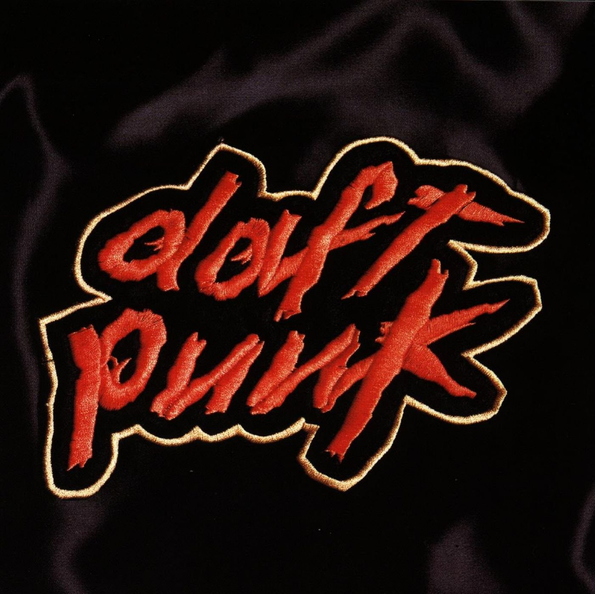

Recorded memories.
From the first beat to the final record. Explore every studio album, live album, soundtrack, remix collection, and special edition.
Shop links open Daft Punk’s official store. Catalog searches are provided for archive releases; availability varies.